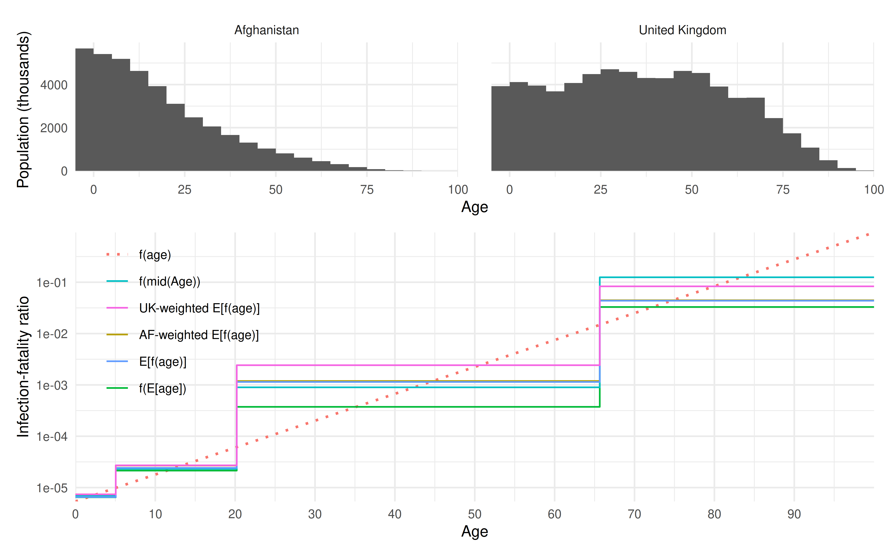

Introductory Usage: `paramix`
intro.RmdThe paramix package provides translation of parameters
for use in compartmental models. Imagine you have compartments
discretising some feature – for example, converting ages into age
categories – but a process thats depends on that feature – for example,
infection fatality ratio. How do you get the right aggregate parameter
for each of the compartments? And once you get outcomes for your
stratified compartments, is there anyway to impute their
higher-resolution distribution?
With paramix, you can blend() a parameter
function into the correctly averaged values, and distill()
outcomes to finer resolutions. These functions work via a mapping object
created with alembic().
In this vignette, we demonstrate applying these functions from an
initial functional relationship through a final analytic process. To
call attention to the where the package fits in, we prepend
paramix::; this is not required during actual use.
Motivating Example
The SARS-COV-2 pathogen causes COVID-19, which has a distinctly age-specific mortality. In a meta-analysis, Levin et al1 estimated the age-specific infection-fatality ratio (IFR) for COVID-19 as:
ifr_levin <- function(age_in_years) {
(10^(-3.27 + 0.0524 * age_in_years))/100
}To evaluate the threat of an infectious disease, researchers often calculate expected “years life lost” (YLLs). Based on age-specific mortality data, we can estimate how many years individuals at various ages can expect to live. People who die of a modelled illness lose a corresponding number of years of life, depending on their age at death.
In this vignette, we will turn a continuous IFR relationship into compartmental aggregate IFR and deaths for broader age groups, back to age-specific deaths, and use these to estimate YLLs.
Parametrizing a Compartmental Model
Typically, ODE compartmental models have low-resolution stratification combining several ages for a mix of computational reasons, data-availability on other interactions like contact patterns, and to match intervention targets (e.g. vaccinating children versus working age adults versus retirees).
When mixing several ages into a single compartment, what is the properly aggregated value of parameters like the IFR? Generally, , so using the IFR at the mean age for the compartment is not guaranteed to be correct. The average IFR over the age range is more reasonable, but that assumes a uniform distribution of individuals by age, which is not generally true. The proper average of IFR needs to be weighted by the age distribution, or:
We can compare the various calculations of the IFR for two different population age distributions: Afghanistan and the United Kingdom. Recall, we have considered using:
- the average age in the function, i.e.
- the function average, assuming uniform age distribution, i.e.
- the weighted function average (as above)
Let’s imagine a compartmental model with age groups [0,5), [5,20), [20,65), and [65,101], corresponding roughly to pre-school age children, school age individuals, prime working age adults, and post-working age adults. First, we need to get the relevant values:
# our model age group cut points
model_agelimits <- c(0, 5, 20, 65, 101)
# get select data from World Population Prospects estimates
data("popF", package = "wpp2019")
data("popM", package = "wpp2019")
pop_dt <- as.data.table(popF)[,
.(name, age, popF = `2020`)
][
as.data.table(popM), on = c("name", "age"),
.(name, age, popF, popM = `2020`)
][, age := as.integer(gsub("^(\\d+)[-+].*$","\\1", age)) ][
name %like% "Afghanistan|United Kingdom"
]
density_dt <- pop_dt[,
.(
name, from = age,
weight = popF + popM
)
]
rm(popF)
rm(popM)We can calculate the IFR values for each model age group, under
different approaches to computing them. We’ll use the package function
parameter_summary(), which provides a convenient comparison
of the parameter values for these approaches to summarisation:
plot_dt <- density_dt[, { # compute parameters for each country of interest
paramix::parameter_summary(
f_param = ifr_levin, f_dense = .SD, model_agelimits
)
}, by = name]And plotting these different blends:

Clearly, these different approaches result in different mortality outcomes for otherwise identical infection patterns.
Typical Application
In the previous section, we used a convenience method the package provides for plotting. More typically, you will want to use the three main functions in the package:
-
alembic()to make a weighted mapping from one resolution to another -
blend()to aggregate the associated weighted mixture parameters -
distill()to impute finer scale outcomes from model outputs
Revisiting our previous example, the properly age-weighted IFRs look like:
# setup the model to outcome mapping using `alembic`s
mapping_dt <- density_dt[,
paramix::alembic(
f_param = ifr_levin, f_dense = .SD,
model_partition = model_agelimits,
output_partition = seq(min(from), max(from) + 1L, by = 5L)
),
by = name
]
params <- mapping_dt[, paramix::blend(.SD), by = name]| model_from | Afghanistan | United Kingdom |
|---|---|---|
| 0 | 0.0000074 | 0.0000074 |
| 5 | 0.0000269 | 0.0000271 |
| 20 | 0.0011908 | 0.0024191 |
| 65 | 0.0444615 | 0.0820226 |
These parameters are now weighted correctly for use in a model with those age groups and underlying populations. Once you run that model, you might want to disaggregate an outcome, such as for example converting deaths into years of life lost.
In this example, since the IFR increases with age, deaths occurring in a wide age group are more likely to have occurred at the older end of the age group. We can compare a few approaches for calculating the distribution of deaths: we could assume that deaths occur
- all at the middle age in the age group,
- uniformly within the age group,
- proportional to age distribution within the group,
- proportional to age and relative mortality rates.
For the last option, we can use Bayes’ theorem to calculate about the correct proportionality:
We know that is the relative fraction of an age within any age group, and is the relative mortality rate for that age within that same age group. We can therefore use those terms to calculate , and allocate the mortality outcomes accordingly.
For demonstration purposes, let’s assume that one million infections occur proportionally across the model population groups2. Using our properly-weighted IFR values for each age group from above, these infections result in deaths as follows:
model_density_dt <- density_dt[, .(
model_from = model_agelimits[findInterval(from, model_agelimits)],
weight
), by = name][, .(weight = sum(weight)), by = .(name, model_from)][,
weight := weight / sum(weight), by = name
]
model_deaths_dt <- model_density_dt[
params, on = .(name, model_from)
][,
.(name, model_from, deaths = weight * 1e6 * value)
]| Afghanistan | United Kingdom | |
|---|---|---|
| 0 - 4 | 1.074175 | 0.4261563 |
| 5 - 19 | 10.516660 | 4.6989708 |
| 20 - 64 | 519.633628 | 1408.8529634 |
| 65 - 100 | 1177.814282 | 15299.9565319 |
How would these translate into age-specific deaths, based on these
different calculation methods? For convenience, paramix can
compute all approaches mentioned above for comparison:
distill_methods_dt <- model_deaths_dt[,
paramix::distill_summary(
.SD[, .(model_from, value = deaths)],
mapping_dt[name == .BY]
),
by = name
]You can see the calculations by entering
paramix::distill_summary (no parentheses) as an R prompt.
Plotted, the results for the four different methods of calculation look
like:
When we combine these different deaths-by-age with life expectancy estimates, we see these differences in estimated years of life lost. Without the necessary adjustments for both age structure and mortality shape, we typically overestimate YLLs.
#> Warning: Removed 2 rows containing missing values or values outside the scale range
#> (`geom_bar()`).